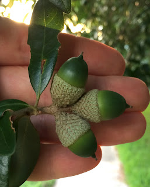
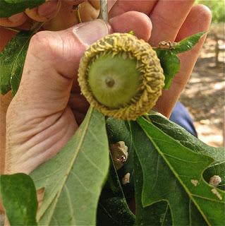
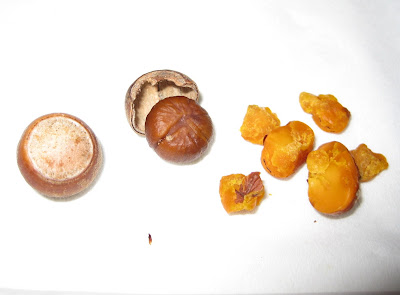
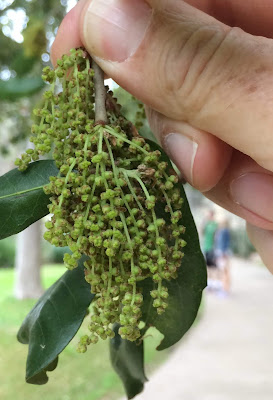
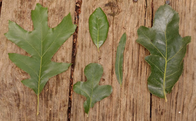
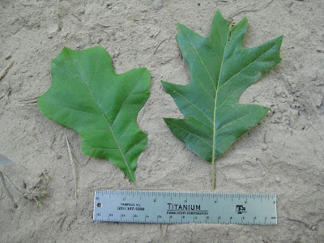
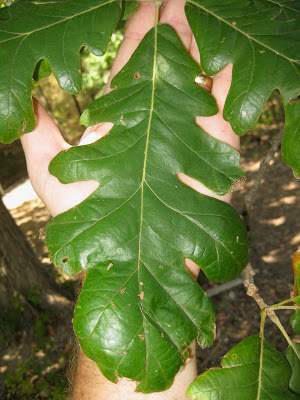
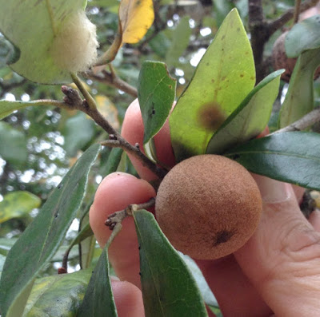

Scientific Name: Quercus spp.
Abundance: common
What: nuts
How: leach out tannins with lots of water then grind to flour, roast nuts then grind for coffee
Where: oaks (white, red, live, burr, post, pin, etc)
When: fall
Nutritional Value: protein, minerals, fats and carbohydrates
Other uses: tanning leather
Dangers: very bitter if not tannic acid isn't leached
Medicinal Summary:
Galls - astringent, hemostatic; antibacterial; antifungal, may reduce symptoms of Parkinson's disease (tisane)
Acorns - astringent (tisane)
Bark - astringent (tisane)
Acorns

Bur oak acorns are the biggest at over 1" across.

Shelled acorns.

These are the oak flowers that eventually become acorns.

Assorted oak leaves.


Bur oak leaf.

An oak gall, created by chemical warfare between a type of wasp and the oak tree.

Stately oak trees can grow over 100’ tall and hundreds of feet in diameter under ideal conditions. Their bark ranges from smooth to deeply fissured. Branches tend to give oak trees a round or oblong shape. They usually prefer full sun and loose, well drain soils but with fifteen different species to choose from in Texas along, there’s a good chance you’ll find an oak somewhere nearby.
The calorie-laden acorns of oaks have supplied fats, oils, and protein to mankind for thousands of years. A one ounce (28.3g) serving of shelled acorn meat contains about 110 calories in the form of 6.8g of fats and 1.7g of protein, plus a small amount of calcium. Acorns can be ground into a gluten-free, high-protein flour good for making flat breads and batter-style baked goods as well as to thicken stews and to make gravy. Roasted acorns have been used as a substitute for coffee grounds, but all that can be said about that is the resulting liquid is brown and bitter, any similarity to it and coffee is strictly due to the desperation of the brewer.
Acorn must have their tannic acid leached out before consumption. Luckily tannic acid is very water-soluble and easy leach out by placing the shelled, crushed nuts in a mesh bag then submersing them in running water for several days. An easier method is to coarsely chop them in a blender or food processor then repeatedly running them through a coffee maker until they no longer taste bitter. The hot water will extract the tannins but do not allow the acorns to cool between flushes or the tannic acid will bind more tightly to the acorn meat. Also, do not grind the acorns finely before leach them as a flour-sized particles will clog the filter.
Unfortunately, the fats and oils in acorns turn rancid fairly quickly. Fresh ground acorn flour will go bad in as little as four weeks if exposed to air and warm temperatures. Freezing the flour, especially if vacuum-packed (a messy process) can stretch its usable life to six months. You are better off freezing the un-shelled acorn and just leaching and grinding as you need it. Frozen, vacuum-packed acorns still in their shell can last up to a year.
White oaks (Quercus alba) produce the least bitter nuts, followed by Red oaks (Quercus rubra) but even both of these need the tannins leached from their acorns. White oak acorns mature in one year while Red oak acorns take two years to complete their growth. Pin oaks (Quercus palustris) are related to Red oaks while Bur oaks (Quercus macrocarpa) are related to White oaks. Live Oaks (Quercus fusiformis) produce the least desirable acorns as they are hard to remove from their shells and are very bitter.
To use acorns as a caffeine-free coffee substitute coarse-grind them then roast them at 400F in an oven to a dark brown color. At this point you can use them just like ground coffee.
The oak gall wasp likes to lay its eggs under the tender bark of new oak twigs. Doing so somehow triggers the formation of a round oak gall. The oak tree doesn't like this much and starts pumping assorted chemicals into the gall to try and kill the wasp larva. The end result is a small, hard ball loaded with medicinal properties. These galls were crushed and then used to make ointments, tinctures, medicated oils, and teas to fight infections inside and outside of the body. The crushed oak galls were also combined with iron salts in vinegar to create a very dark, non-fading ink.